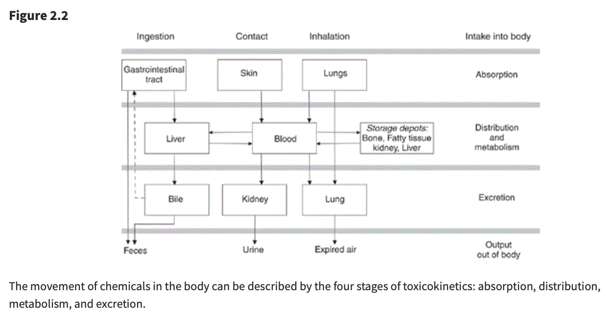

職場風險評估總論
職場風險評估總論
安全與衛生領域的風險評估
這份教材專為職安衛主管設計，旨在深度解析**安全（Safety）與衛生（Hygiene）**兩大領域的風險評估精要。透過通用步驟與與健康（專業毒理學）的並陳，學員將建立起「預見危害、科學評估、有效控制」的全方位預防管理思維，從源頭阻斷職業傷害（意外）與職業病的發生。
第一部分：通用風險評估五步驟 (HSE 模式 - 安全導向)
通用風險評估主要聚焦於即時性、物理性的傷害。這些危害通常是直觀可見的，依循英國安全衛生執行署（HSE）的經典五步驟（融合我國相關指引），其核心在於透過專業的現場巡查與常識判斷來防止傷亡意外。
步驟 1：辨識顯著危害 (Look for the Hazards)
管理深度解析：管理者巡視現場時，應具備「預見性」視角。除了顯而易見的缺失，更要關注「潛在」的不安全狀態。
實務範例：
物理能量可能釋放：如高壓蒸氣管線的腐蝕劣化、未固定的高壓鋼瓶、運轉中缺乏安全護罩的快速刀片等。
環境動態可能危害：濕滑地面不只是液體傾倒，也包含環境溼度凝結；堆放雜物不僅堵塞路口，更可能在地震時坍塌造成傷亡。
人機互動介面：堆高機在盲區的作業、員工因疲勞導致的誤操作情境等。
關鍵方法：採取「行動巡檢」，落實到位查證，及徵詢第一線老員工，詢問：「在哪個作業環節你覺得最不合理？」或「哪台機器曾發生過『差點傷到人』的情況？」。
步驟 2：確認可能受到傷害的對象與方式 (Decide Who Might be Harmed)
重點：不要僅列出姓名，而要分析群體暴露的脆弱性及其特定的受傷機制。
特殊族群考量：
青少年與新進勞工：由於缺乏職涯中的「危險記憶」，常會為了追求效率而簡化安全流程。
非固定雇員（承攬商/訪客）：他們不熟悉廠內特定的應變程序。例如，化學品洩漏報警聲響時，他們可能不知道該往哪裡撤離。
脆弱個體：包含患有特定慢性病（如心臟病勞工在高溫環境）、孕婦（需防範體力負荷過重）或單獨作業者（發生心肌梗塞或受傷時無人呼救）。
步驟 3：評估風險並決定控制措施 (Evaluate and Decide)
目標：（ALARP 原則） 判斷剩餘風險是否已降至「合理可行」的最低限度（As Low As Reasonably Practicable）。這涉及控制成本與風險降低效益之間的平衡。
控制層級（Hierarchy of Controls）應用：
消減 (Elimination)：從設計階段就移除風險，如自動化倉儲取代人工搬運。
取代 (Substitution)：改用較低危險性的作業方式或材料。
工程控制 (Engineering)：這是最應投入預算的環節，如設置連鎖防護、遠端遙控作業。
行政管理 (Administrative)：包括建立作業許可證制度（PTW）、限制高風險區域的進入人數、教育訓練、制定ＳＯＰ等。
個人防護裝備 (PPE)：嚴禁將 PPE 作為第一線或唯一手段。主管需指導與監督 PPE 的正確配戴與耗材更換頻率。
步驟 4：記錄重要發現 (Record Your Findings)
法律與責任：紀錄不僅是法規要求，更是發生爭議時的「免責與佐證」資料。
高品質紀錄的標準：
必須證明已進行過「適當且充分」的調查。
展示已處理所有顯著危害。
證明控制措施是與風險程度相稱的（Proportionate）。
步驟 5：審查與修訂 (Review and Revise)
- 觸發機制：評估不是終點。當引進新設備、製程變更、或發生「事故或虛驚事故（Near Miss）」時，代表既有危害與風險評估可能存在盲點，必須立即重啟評估流程。
第二部分：化學健康風險評估 (毒理學模式 - 衛生導向)
化學品風險評估需具備科學廣度。由於化學傷害具備長期性、隱蔽性與不可逆性，管理者必須仰賴毒理學數據而非僅靠肉眼觀察或感覺。
1. 危害辨識 (Hazard Identification)
資訊解讀能力：熟練查閱 SDS（安全資料表）第 2、11、15 節。辨識化學品是否具備「三致效應ＣＭＲ」（致癌、致突變、生殖毒性）。
環境特徵分析：分析化學品的飽和蒸氣壓、高揮發性物質在通風不良處會迅速達到有害濃度。
2. 危害特徵描述與 ADME 程序 (Hazard Characterization)
毒理動力學（Toxicokinetics）解析：
吸收 (Absorption)：吸入是職場最危險途徑，肺泡巨大的交換面積使毒素直接進入血流。注意皮膚滲透，某些溶劑會攜帶其他溶質「穿透」防護手套。
分布 (Distribution)：化學品會儲存於人體「儲存庫」。如鉛儲存於骨骼、脂溶性溶劑存於脂肪。這會導致動員作用 (Mobilization)，使員工在停止暴露後血液中仍持續出現毒素。
代謝 (Metabolism)：肝臟的「活化作用」可能使化學品轉化為強致癌的代謝物。
排泄 (Excretion)：腎臟功能影響排毒效率。半衰期長的化學品更易造成蓄積性中毒。

3. 暴露評估與監控邏輯 (Exposure Assessment)
定量標準：不僅看現點濃度，更要計算 8 小時時量平均濃度 (TWA)、ＳＴＥＬ等。
生物監測 (Biomonitoring)：必要時透過尿液或血液檢查，確認「總吸收量」，這比單純的環境空氣採樣更能精準反映勞工的真實風險。
4. 風險特徵描述與長期效應 (Risk Characterization)
潛伏期與慢性疾病：（例）
慢性肺部損傷：如石棉引發的肺纖維化、長期粉塵導致的肺氣腫。
癌症風險：潛伏期常長達 20-40 年。這意味著今日的管理疏失，將在員工退休時以癌症形式顯現。
交互作用 (Interactions)：
協同效應 (Synergy)：如吸菸勞工暴露於石棉，其癌症風險不是相加而是相乘。
相加效應：多種溶劑同時使用，會累加中樞神經系統的抑制效果。
第三部分：安全 vs. 衛生風險評估比較
| 比較項目 | 通用風險評估 (安全 - Safety) | 化學品風險評估 (衛生 - Hygiene) |
|---|---|---|
| 傷害性質 | 急性、即時發生（如骨折、電擊、爆炸傷）。 | 慢性、累積、延遲發生（如癌症、神經萎縮）。 |
| 危害感知 | 危害清晰可見（如漏電、轉動軸、不穩的梯子）。 | 危害常不可見（如無味蒸氣、亞微米粉塵）。 |
| 判定準則 | 機械安全標準、法規淨空間距、承重係數。 | OEL（暴露限值）、TWA、ADME 分布模型。 |
| 可逆性 | 外科損傷通常可修復。 | 器官損傷常具不可逆性（如肺纖維化、細胞突變）。 |
| 監控手段 | 安全巡檢、設備自動檢測、自動斷電。 | 空氣採樣、生物檢材採樣（尿/血）、肺功能監控。 |
| 主要侵入路徑 | 物理性機械能、熱能、電能接觸。 | 吸入（最主）、皮膚滲透、體內化學代謝。 |
| 預防邏輯 | 阻斷接觸能量傳遞，隔離危險源。 | 降低累積暴露濃度、強化代謝排泄、縮短工時。 |
第四部分：職安衛專業人員的專業提升建議
為了具備卓越的職場風險評估與控制職能（Competence），專業人員可以從以下四個維度持續自我提升，從追求「合規者」轉型為「策略管理專家」：
1. 跨學科知識的深度與廣度
化學與毒理學深耕：不要只滿足於讀懂 SDS。應研究第 11 節的毒理數據（如 $LD_{50}$、$LC_{50}$、ＡＤＬＨ），理解化學品的傷害機制。
工程與流體力學：掌握局部排氣系統（LEV）的評估技術。能判斷捕捉風速是否真正將污染物帶離勞工呼吸帶，而非僅是「有抽風聲而已」。
倫理與法規：熟悉 ISO 45001 與最新勞動法令，同時維持「保護勞工生命與健康與企業發展平衡」的專業倫理。
2. 數據解讀與證據轉化能力 (Evidence-based Action)
批判性思考：學會質疑環境監測報告，採樣點是否設在「最糟情況」？採樣時間是否涵蓋了作業高峰期？統計推論暴露風險等。
流行病學應用：觀察員工體檢報告的「趨勢」，若特定單位員工肝指數集體異常，即使環境監測合格，也應懷疑是否存在皮膚吸收或非典型暴露路徑的可能性。
3. 高階風險溝通與影響力 (Strategic Communication)
向上溝通：學會將「安全與健康數據」轉化為「財務語言」，向高層解釋預防性控制能節省多少未來的停工、罰鍰、職災補償費用與商譽損失等。
向下溝通：將枯燥的法規標準、OEL 限值轉化為感性敘事，如強調「為了二十年後能健康地陪伴家人，在一定狀況下，請選用正確呼吸防護具等」。
4. 國際視野與資訊同步
追蹤權威機構資訊：定期訂閱 ＨＳＥ、ＯＳＨＡ、ＡＩＨＡ、勞安所、職安署等電子報或指南與研究報告等。
專業認證與社群：積極參與國內外專業證照考試（如 職安衛技師、管理師、CIH、CSP），並透過案例研討汲取他人的失敗教訓，避免在自家企業重蹈覆轍。
對職安衛主管的實務建議
整合概念 (Integrated Vision)：考量健康與安全，例如，通風櫃既是職業衛生設施（移除毒氣等有害物質），其馬達也可能需具備安全規格（防爆）。
專業判斷力：例如，看懂 ＴＥＬ、ＬＥＬ、RD50（刺激濃度）、專業儀器設備與安全裝置等原理。
拒絕謬誤：留意倖存者偏差、確認偏誤、可得性偏誤等思維陷阱，專注於源頭控制風險。
責任照顧 (Responsible Care)：視野應超越廠房圍牆，關注社區健康與環境逸散（Fugitive Emissions），落實企業永續經營ＥＳＧ。
總結：安全防護能確保勞工今日平安回家；衛生管理則能確保勞工在退休後依然擁有尊嚴與健康。而你的專業職能，則是這份承諾與期許的唯一保證。